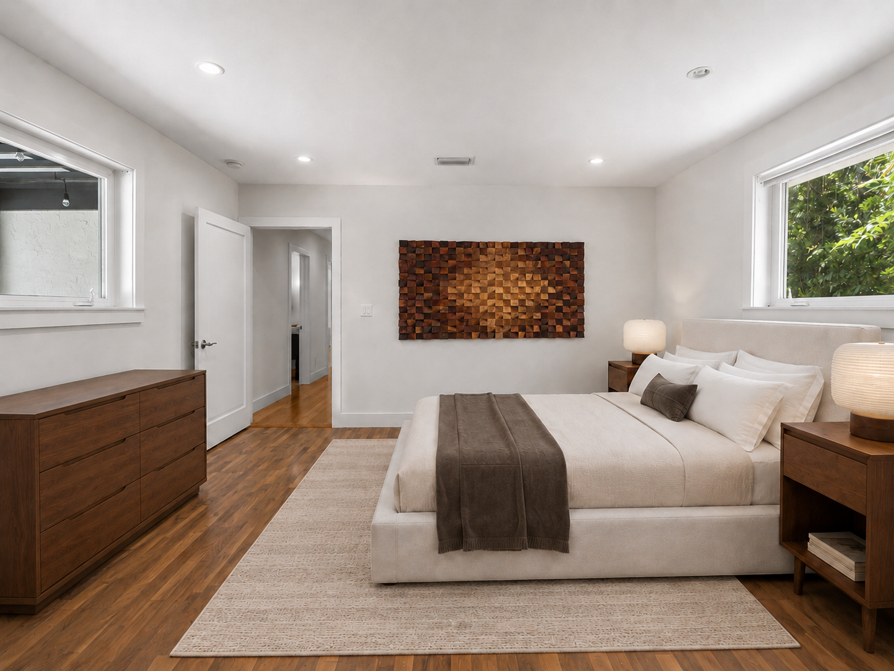

From the agent staging a single bedroom to the platform team wiring up a furniture catalogue — CoStage's pipeline fits wherever you sit in the process.

No photographer wait time, no rented furniture. Drop in a photo of an empty room and get a staged preview before your next showing.
"I used to wait days for a stager. Now I stage the photo myself before I even leave the property." — Independent real estate agent
Stage once, render everywhere. The same furniture pick lands in the same place across every photo from a shoot.
spatialParser.js turns image-blaster output into a floor polygon, camera
poses, and room dimensions automatically."The hardest part of staging a full shoot was always making sure the couch didn't move between angles. This handles that for me." — Real estate photographer
Build your furniture library once and let your whole team draw from it — no re-sourcing the same sofa for every new listing.
costage-library.json as a portable copy your whole team can load
and stage from."Every agent on our team stages from the same library now, so listings have a consistent look without anyone having to think about it." — Brokerage operations lead
Lay out furniture on a floor plan and render it into a photo — useful for pre-construction units where there's no room to photograph yet.
costage-placements.json."We can show buyers what a unit looks like furnished long before the model unit is ready." — Development sales director
Everything CoStage produces is a plain JSON export or a local API endpoint — easy to wire into an existing platform.
backend/server.js exposes a /catalogue?source=... endpoint
that returns structured product data via JSON-LD parsing and DOM scraping.costage-library.json and costage-placements.json are
portable, versioned exports your platform can ingest directly."We pulled the catalogue endpoint straight into our internal tools — no scraping infrastructure of our own to maintain." — Platform integrations engineer